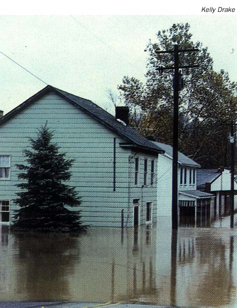

#11274 1 2006-09-17T01:46:57Z Drunk on Java Look at the banner at the top of the page...
See the guy with a question mark?
What is that????
If you don't know, post what you think it is.

#229562 157 2006-09-17T01:55:18Z Drunk on Java i want a funny/gothic thing with my name and 7/9 colums completed
thkz

#229577 14 2006-09-17T02:16:32Z Drunk on Java a phat or party hat is an extremely rare iten from and mmorpg game that will not be identified...
ok, its runescape

#229578 15 2006-09-17T02:18:20Z Drunk on Java goodnite guys, im wiped and i have business to attend to...
#230032 126 2006-09-18T00:37:40Z Drunk on Java i need one that says slipknot freak with the slipknot star or something ty...

#11294 1 2006-09-18T00:47:00Z Drunk on Java minimum of 200- 300 maps, good maps, trying to stock the crap out of my user levels section,
PS ty astheoceanblue for the best maps ever!!!!
#231197 193 2006-09-20T19:39:22Z Drunk on Java im in
#231641 64 2006-09-21T22:26:02Z Drunk on Java I have a few macs and an ibook along with my reg pc, now macs are WAAYY too flashy. The Cpu sux and the only thing its good for is photoshopping and sound editing/ recording.
Nothing against you guys but... its time to switch. Go with windows all the way. or linux

#11374 1 2006-09-23T02:33:05Z Drunk on Java Is it possible to edit the time of your created map? Like how much time the player has to complete the map.
#11375 1 2006-09-23T02:50:02Z Drunk on Java ok,ok,ok If you really love your pet, you will put him in the best forum in the world. Take a picture of it, and post it here for all to see! Great PLace to show off your pet!

EDIT: Sorry it was in the wrong forum *hits Head* always in off topic. Thanks guys 4 moving it.
I keep screwing up in this forum
#11377 1 2006-09-23T03:24:11Z Drunk on Java Heyz,
OK this will take a while, but the goal is to have the 5gazillonth post on this thread.
The Winnings: Um, Still thinking about. A Hug?
Anyway, You can post anything: Pics, Random Phrases, Pressing your face, butt, hand, or other body parts on your keyboard, etc.
Ok begin, go, whatever.

OK, Now go
#232229 129 2006-09-23T03:47:55Z Drunk on Java Have you stopped making tags?

#232232 7 2006-09-23T03:50:56Z Drunk on Java oh we arent wussies, we can make 5000, 250 is 4 wimps who tell people to get get a life at 21 while driving like a maniac in mommys car.
#232878 198 2006-09-24T16:08:24Z Drunk on Java me and my ex gf, Faith, just got back together after almost a year.
#11421 1 2006-09-25T19:48:41Z Drunk on Java A good future update would be that ned could have a time editor where you can set a given amount of time for your own map.
what u guys think?

#233303 85 2006-09-25T19:56:11Z Drunk on Java ok, ok lets bring it to 1000 posts
#11422 1 2006-09-25T20:56:07Z Drunk on Java ok, if you do not know how to play... this is how:
Take the Word BUMP and turn it into a phrase.
EXAMPLE:
Biohazardous
Users
Make
Pie
BUMP, get it?
Go.

#11423 1 2006-09-25T21:05:29Z Drunk on Java If you Dont KNow how to text Draw, Heres a Crash Course:
For Shadows use + or any not so big chars.
For solid area, use & or E, things that take up space.
So basically,your drawing with numbers and letters.
_____
|0__0|___
|-----------|
|00><00>|
My retarded train...
#233358 3 2006-09-25T21:10:49Z Drunk on Java Jeez, Do we have no players out there?
Buy
Underestimated
Mini
Pipes
#233360 88 2006-09-25T21:18:08Z Drunk on Java BUMP________
#11424 1 2006-09-25T21:25:08Z Drunk on Java IN this Topic, name Celebs, Posters, or Annoying Stupid People That Should Be Chased By Geese. Not Just Geese, Green Geese.
I wish Hippies Would Get Chased... Eww

#233368 4 2006-09-25T21:52:10Z Drunk on Java just now, I saw Johnny Depp, he's got to go.
#234091 51 2006-09-27T00:43:20Z Drunk on Java I Edited the thread... ok.
#234096 9 2006-09-27T00:46:32Z Drunk on Java forget it this thread sux...
#238741 470 2006-10-09T13:59:35Z Drunk on Java here mine

#12364 1 2006-11-20T01:17:33Z Drunk on Java OK, Im Back and i made this screensaver of the n title screen. Also includes sound!!!
DOWNLOAD!
Go to near bottom of the link page and enter the number thing.
Then click submit
Wait 30 seconds, theres a timer on the next page after those annoying huge ads
Download!
#257204 3 2006-11-20T01:26:08Z Drunk on Java Please send feedback
#257205 4 2006-11-20T01:27:55Z Drunk on Java is it full of lines on dark gray pieces? I think i have it configured for 640x860
#259033 13 2006-11-24T21:00:00Z Drunk on Java im working on it
#12441 1 2006-11-24T21:06:00Z Drunk on Java All the cursors are now here!!
All of them
Woot
#259174 14 2006-11-25T01:51:08Z Drunk on Java ok, set your screen resolution to 1024x768 should work now
#12485 1 2006-11-27T04:58:30Z Drunk on Java 
if your girlfriend/boyfriend broke up with you, tell your story of how it happened and the way you reacted. also tell how you two were before the break up.
#260312 4 2006-11-27T05:10:03Z Drunk on Java i had an EXTREMELY deep relationship with a girl and she broke up with me a week ago. that was why i started this...
#12977 1 2006-12-19T00:21:07Z Drunk on Java This doesn't fit into the other games forum because this topic is about posting some of the creations you made in Game Maker 6. The reason it does not fit is because you can also make practical applications rather than games in Game Maker 6.
So, If you made something NOT N- REALATED, go ahead and show it off.
WooPee, Later -/
#273179 3 2006-12-19T01:08:35Z Drunk on Java Because you can post not n related games too
#13032 1 2006-12-20T23:43:24Z Drunk on Java I need the
Phantom of the opera overture for a little project.
This needs to be the Overture from the NEW MOVIE ONLY.
It can't be from any old ones or stage plays.
I would greatly appreciate it, i just can't seem to find it on google, i just get crappy homemade midis.
ty
#13507 1 2007-01-14T00:33:25Z Drunk on Java Ok, the news is microsoft closed the link to download windows vista rc1. i know some of you guys have it, and i need i cuz i gots a new computer. in other words, i lost mine.
if you have the ISO image, god that would be great if you SOMEHOW could get it to me throught the internet (considering its a 2 gig ISO).
If you have and/ or have an idea how to get it through the net to me, that would be awesome.
I DO HAVE A SERIAL NUMBER, letting you know.
post here to let me know anything...
thx bunches
#285372 3 2007-01-14T00:42:29Z Drunk on Java Its legal, copying/ trading serials is well, not. Thx wor wiki!
#285384 121 2007-01-14T01:42:25Z Drunk on Java omg, this is a really late post.....
...
i dont wanna get in trouble so, Macromedia DW 8
#285402 65 2007-01-14T02:41:10Z Drunk on Java you like it when u get fucked up the ass sideways, i quess.
#13508 1 2007-01-14T03:04:18Z Drunk on Java Sorry, trying to fit this title in lol. Anywho, what was the first thing you said when your girlfreind broke up with you?
Was it an Insult? [ BITCH!! ]
Plea for taking you back? [ please take me back! ]
Silient? [ [silent] ]
Walk away? [ [walks away] ]
or anything other? [ your whatever here ]
Oh yeah give the juicy details.
jimminy crickets.
#285570 2 2007-01-14T17:22:14Z Drunk on Java You probaly recieved level data. N level data is coding [basically numbers and letters] that creates an output in the game. Find your userlevel text file included with the .zip you recieved with the download.
But, if you do not know how to add level data, read the user manual to learn. Add the level data, a title, a type and author to your userlevel text file. OPen N.exe and choose user levels. Look for the level you added. Play it!
Hopefully I had helped.
-OR-
You could have recieved a level demo code. Which playsback the level from a previous playing. To view this, at the main n.exe screen, hit the [`~] key (located above tab) and press the corresponding letter to load a demo playback. Copy and paste the data and go back to the debug screen. Press the corresponding button to then play the demo.
Maybe that helped.
#13517 1 2007-01-14T17:49:20Z Drunk on Java Ok, Obviously n is not the only game we play here (thats why we have this child). This thread is in regards to the MMORPG Game RuneScape.
Here you can discuss new Updates, Holidays Events, Quests, Weapons, etc.
But Remember: Most Forum Rules Apply.
Rules:
1.Forum Rules Apply
2.This is NOT the bash and trash forum, meaning keep the language to yourself.
3.No trying to scam people, account stealing, those kind of things
4.No Going way off topic
5.No Double Posting
6.Hiding Level Truth (meaning don't exaggerate yourself)
7. DO NOT POST IF YOU ARE GOING TO CRITICIZE THE GAME ITSELF
Lets get along
 Don't Play? Start a free Account! Runescape
Don't Play? Start a free Account! Runescape
Me? I play two accounts: Childofafi (cmbt 58) and Tawno2 (cmbt 117)
#285667 173 2007-01-14T20:16:04Z Drunk on Java I think the link is broken
EDIT: Nevermind
#285759 11 2007-01-15T00:13:44Z Drunk on Java To be almost exact, 21% of the quests do that.
#285794 42 2007-01-15T01:14:27Z Drunk on Java Wow

, thats some nice shiz youve got there. Would Keron ever code this into the forum, 'cause that would really promote metanet.
Do it keron, I know you want to.
#286100 49 2007-01-15T20:45:03Z Drunk on Java It could promote metanet as the ingenius, artsy, software company that they are. With a kick ass looking forum, it tells someone who never heard of the company that metanet is no cheapy freeware company, but a company with a passion. A passion for making the most out of what they have. And not letting money stand in their way. They go above and beyond what their limits alow them to and produce award winning software.
Im gonna cry.

#287607 182 2007-01-19T23:00:01Z Drunk on Java Gm6 and scripting is for girly men. He doesnt even know the definition of programming. He just scripting and dragging dropping. I mean seriously, C++ and Open GL is the way to make a program.
There is so many glitches in this. I have 20 bucks this will never reach its full potential. Take it from a man who know what the hell what is what, use Ned, regualar Ned. Not some phony sissy man gm6 scripting compilation 'program'.
This is Drunk On Java Saying, This Sucks.
Don't download this shit.
#287612 79 2007-01-19T23:10:12Z Drunk on Java Every body hers a fagget they shoul just go eat out there asshole and eat their shit. Id rather have an origy with miicheal jack son then listen to u asshole s bitch about your stuff and ur small dicks , if i knew were you lived i would come over and shit in ur showeer and wipe my ass on ur moms pubic hairs. and then i would have sex with ur sister and the n after that i would stick ur head up ur sisters asshole cuz i just made it the size of a grape fruit.
ok
#287697 8 2007-01-20T03:17:21Z Drunk on Java it IS an unlockable. a really, really hard unlockable.
i can't get any of them.
no you didnt

#287704 37 2007-01-20T03:43:58Z Drunk on Java Fimision,
I would suggest another bass drum. Get that with a pearl powershifter. Probably the best double bass pedal ever created.
Yet, It Cost$
#13600 1 2007-01-20T04:15:15Z Drunk on Java Steve Jobs is (once again) at it again. But this time, he screws up!! Yeah, the entire thing with cisco and stuff.
But anyway, this new little gadget iphone is introduced with a prank call to starbucks, 4000 lattes. Anyway, what's your input on this overpriced 5 in one thing.

#13674 1 2007-01-23T23:56:20Z Drunk on Java Well, we love N, Don't we? And sometimes, we aren't at the computer to play it. So, I have a great Idea that is possible. Putting N on a PSP. It's acctually very simple, Convert Projecter to .swf. MEGA compress the swf. Put in psp_root/psp/common folder. Open Internet browser, type in the location and play!
But. I'm not there yet.
What I need to Do.
Get N. (Duh)- Done!
Convert To .swf- Done!
Compress it Megaly.- Done!
Reconstruct Tiles- Done!
Patch- Done!
Finalize- Done!
Create Instructions- Working...
Distribute- Not Done
Enjoy- Not Yet
Currently 95% Done.
#290602 45 2007-01-27T19:21:48Z Drunk on Java Pose: Breakdancing (of some sort)
Color: Blue
Text: Drunk On Java
Location: Attached
Attachment (lost): post-20-1169925708.png
#290616 110 2007-01-27T19:59:51Z Drunk on Java Yeah, .sol editors don't work with n .sols
#13726 1 2007-01-27T20:52:54Z Drunk on Java Does anyone have any older versions of n? I just can't seem to find them anywhere. Like 1.3, 1.2, etc.
ty
#13729 1 2007-01-27T21:56:45Z Drunk on Java As of January 1st, 2007, 12:30am, The Best Buy Stores (pennsylvania) opened their doors at a sepcial time to introduce the 'WOW' so they call it. Today, Windows Vista was Launched, "with a goal to take down the Mac Os Faimly"
Cnn. I dont know if that's Bill Gates' goal, but it's worth striving for. Now, once we start getting set into the new os, there will be some questions. Me, i only got the os a little less than a week it had came out, so i have very, very little experience with it, except for the RC1. i will help answer some of these questions and other forumers feel free to help out others too. Hopefully you guys enjoy the os, it's going good for me.
ciao
Where To Get Express Upgrades:
Dell
HP
Sony
Alienware
Post any other brands that are vista capable
Tips:
Have at least 750mb RAM for outstanding performance.
Decent Graphics card will improve Aero Capability.
Aero is 3-d window organization within tiles: really cool
v
Attachment (lost): post-5-1169935005.jpg
#290699 3 2007-01-27T22:28:16Z Drunk on Java 1. Is it slower (significantly) than XP [I'm guessing the answer is yes, but you never know]
2. That 3D windows thing: it looks cool, but is it really that useful?
3. Is it worth it to upgrade from XP?
1. Depends on your Ram. Ancient Egyprian Computers will lag badd.
2. Somewhat, you see up to like 12 windows, and close them accordingly in case of nonresponsive programs instead of layering them and waiting for one to close to close another.
3. YES! So many more features, takes you away from the windows you are used to knowing and adds things like Desktop Objects (simliar to Mac os x widgets) and of course aero!
But it cost$
#290707 6 2007-01-27T22:43:07Z Drunk on Java Are there any new cool games on Vista?
Just The Same games but a little flAshier
#290709 7 2007-01-27T22:45:00Z Drunk on Java When I got my new computer, I got a free upgrade to Vista when it comes out
I used to use DesktopX to add objects and widgets to my desktop, but this will probably be better.
Is it fully [or at least mostly] compatible with Windows XP applications?
Completely compatable with all applications. I would suggest going to add/ remove programs and getting rid of all useless applications. GET RID OF ALL STARDOCK APPS, you wont need them.
#290713 9 2007-01-27T22:52:57Z Drunk on Java Have you used Mac OS X for a while? If so, would you say that Vista is a ripoff of OS X or entirely different? I'm curious because I've been hearing a lot of complaints from Mac fans, but I've never tried Vista.
well, some aspects of the os are taken from Mac os x. But, there are many more features. Like windows offers the amazing Right Click (since win 95) and has the aero interface. The start menu is much easier and the transparency is great on the menu and dialogs. Vista is definitly is a better buy. Mac os will be slowly dying down.
#290719 10 2007-01-27T23:04:27Z Drunk on Java Nice Pic of the start menu.
Attachment (lost): post-5-1169939067.png
#290728 11 2007-01-27T23:16:26Z Drunk on Java new flshier games v
Attachment (lost): post-5-1169939786.jpg
#290734 13 2007-01-27T23:22:23Z Drunk on Java Do those come with the OS? Chess was a nice adition, I think. And what happened to Minesweper? Is it that little one behind chess?
Minesweeper is behind chess and yes, there included with the os.
PS goin to a party, answering stuff tommorw.
#291218 26 2007-01-29T01:59:37Z Drunk on Java Does Vista have DRM built into the kernel? Why should I consider this a good thing?
Is there an option to turn off all the useless graphical sparkles?
Why the [censored] are microsoft making the next DirectX release a Vista-only release?
Yeah, you can turn off the aero interface as you please.
#291219 27 2007-01-29T02:02:08Z Drunk on Java Heh, though we can't sell 'em yet, I can play around with the laptops that have Vista on them at my place of employ.
So, other than multiple workspaces (Win + Tab), gadgets, miscellaneous eye-candy effects, and no doubt allegedly improved security and stability, does Vista have anything else to offer over Windows XP?
Cuz right now it seems to me that you can emulate pretty much all of what you get out of Vista with nifty downloads and power tools in Windows XP.
Well, The New DirectX Update will enhance vista, it's only availible for vista neway
#291221 28 2007-01-29T02:06:14Z Drunk on Java I read a report and the fact is that Vista is just a flashy upgrade to XP, if you really want the Vista feel, get a theme for XP.
But do you get aero?
No useless program files?
A great Os?
100% Real Copy?
I don't think so.
#291222 29 2007-01-29T02:07:09Z Drunk on Java What is the CPU power to RAM ratio?
Also.
What is the power to wieght ratio?
Thanks.
You do the math buddy, i got a c+ in my class this semster
#291223 30 2007-01-29T02:08:21Z Drunk on Java someone gave me vista ultimate for christmas but i'm not installing it till i at least get a new processor
How?
I got mine cuz of early shipments and that was onlt 3 days ago.
liar
#291224 31 2007-01-29T02:10:05Z Drunk on Java Apparently the are already two viruses made by hackers to penetrate Vista. So much for extra security...
you shouldnt rely on the os for secirity, thats for the other programs you install
#13761 1 2007-01-29T02:15:44Z Drunk on Java You know how we have 'images' maybe videos would be a nice small addition. Just for video links and stuff like that.
Is it all possible to make a video player integrated with posts?
#291965 35 2007-01-31T00:14:45Z Drunk on Java ...don't post quite that many times in a row, please. Just [quote=their name]quote them![/quote]
...and you missed my question on DRM in the kernel. And of the 4 reasons that you gave CTB, about none were any good.
EDIT:you shouldnt rely on the os for secirity, thats for the other programs you install
...and this just made me lose hope in any chance you might have. One of the biggest selling points of Vista was it's enhanced security - edited privelages, etc. Allthough Vista will still nedd software it should do better. Whether it will or not remains to be seen.
Well of course it will have better security, it's just what type you mean. You can protect files with Advanced security optiona that go beyond just Hidden and Read- Only. You can enable write protection on your Cd's to prevent Modifying that you don't want. For internet, you can go to the EXTREME with vista internet explorer. There are soo many option with pop ups, and trust that you can set. You can even block unwanted incoming connections that try to reach your computer. It's kinda hard to explain cuz that computer that has vista doesnt have internet whereas this one. What other kind of security do you need info on?
#291967 36 2007-01-31T00:16:37Z Drunk on Java someone gave me vista ultimate for christmas but i'm not installing it till i at least get a new processor
How?
I got mine cuz of early shipments and that was onlt 3 days ago.
liar
really i do. A friend who works at the shop on the corner got hold of it with 10 installations allowed, i think it's one of those copy's shops get to show off vista before they sell it.
EDIT: and besides who are you to call someone a liar? you said your PC had a 4TB hard drive or something
oh, you mean vista RC1? Thats just a release canidate that stops working on June 7, 2007
#291977 37 2007-01-31T00:29:47Z Drunk on Java #291991 11 2007-01-31T00:56:42Z Drunk on Java Im postponing work on this till next moth
#292000 13 2007-01-31T01:26:23Z Drunk on Java have patience my friend "the best input creates the best output" whatever that means.
#292314 44 2007-02-01T00:38:26Z Drunk on Java Wow, hitachi really meant it when they said 'inspire the next'.
#292324 23 2007-02-01T01:01:18Z Drunk on Java This thread stinks like either bad milk or good cheese.
#292336 46 2007-02-01T01:44:44Z Drunk on Java I can only imagine the size of the internal disk...
that makes me hot
EDIT:
Worthy of a topic#13813 1 2007-02-01T01:46:49Z Drunk on Java You can't get single 1 TB hard drives yet. The highest I've seen available is 750 GB, and even that would require an array of seven disks.
http://www.pcworld.com/article/id,128400-page,1/article.html
It looks like Hitachi is pulling it off.
Holy Mother Friggen Crap
Im getting all hot
#292521 13 2007-02-01T20:02:24Z Drunk on Java I don't get it...

#292525 49 2007-02-01T20:04:58Z Drunk on Java ok...

that's probably filled with bugs though...
#292526 19 2007-02-01T20:06:41Z Drunk on Java That's exactly why im postponing work.
#13820 1 2007-02-01T20:09:40Z Drunk on Java Quote
Hi,
Just wondering what kind of progress you guys have made with N and TNG?
I've noticed the little forum participation, working hard?
When is the goal release date for N update and the new game?
How life in general?
Later
yeah, we're in super-work-mode.
we're far from done, however we've got a lot done. many hard parts have been figured out, but there are still a few remaining, and much implementation to do.
we don't have any estimates yet, but i'd guess that the next version of N will be released some time after robotology is first released -- how long depends both on how many problems there are with the robotology launch, but also with how much we're changing/adding to N. maybe a month or two.. it's hard to say.
thanks,
raigan
#292568 3 2007-02-01T22:06:22Z Drunk on Java it's hard to make promises
#13822 1 2007-02-02T01:14:30Z Drunk on Java In this game, you must make an introduction for the person as if they were a doctor!
EXAMPLE: (lets say LV was above me)
Hi, Im LittleViking and I'm Going To Diagnose That Lump On Your Neck As The Flu.
or something like that.
go ahead and start making fun of other poeple!
#292648 4 2007-02-02T01:19:45Z Drunk on Java Ugh, wasting precious forum space. Lock this.

#292649 6 2007-02-02T01:21:53Z Drunk on Java They are working so hard... im so proud of them
#292684 10 2007-02-02T01:57:05Z Drunk on Java Hi, im Silent. Night! [puts hand in between your legs]. Would you please cough?
#292692 17 2007-02-02T02:14:25Z Drunk on Java You could own the term pornography with one o those
#292694 13 2007-02-02T02:18:22Z Drunk on Java Quote: Yarcloff
!
I think this guy pretty much said it.
someone has to put this in their sig! i would if i wasn't so space councious. That was somhow hiliirous.
#292857 51 2007-02-02T19:50:42Z Drunk on Java NOTE: Dell Express Update Is Offline...
FYI
#13830 1 2007-02-02T20:07:43Z Drunk on Java Hi,
Myspace is huge these days, even movies are using it instead of buying a domian! I think we should start a myspace that would be editable by the Metanet Myspcae Staff. It's a good idea to take metanet with us to some different places. I'm not really good with myscpace, so i was thinking we should get an expierienced person to do it. And Then Build a Staff to take care of it. What you guys think?
#293050 58 2007-02-03T03:01:20Z Drunk on Java DirectX? Halo 3? Mac don't have those. Or 65-70% of the world's computers.
")
#293052 60 2007-02-03T03:12:36Z Drunk on Java Vista is for the "worthy" people.
[people who don't have sucky computers]
#293068 32 2007-02-03T03:35:27Z Drunk on Java Depends on the physics involved.
OT: I still don't see why they won't use online multiplayer. That would be fricken awesome.
#293071 11 2007-02-03T03:38:05Z Drunk on Java i personally do not recommend myspace for "friends" use. I hate myspace, but the popularity of it could give metanet a little more exposure. All I needed was a couple of opinions for this idea.
#293082 64 2007-02-03T03:47:15Z Drunk on Java i'm in the mood for pics...

genius^

not me^
http://www.exconn.net/blogs/images/www_exc.../o_P1020500.JPG
came with my rc1^ taste goood.

vista + mac= good performance that won't break your budget^

objects^
#293084 1096 2007-02-03T03:52:14Z Drunk on Java #293258 2 2007-02-03T18:20:13Z Drunk on Java nope
google it. doubt there are free ones.
#293259 70 2007-02-03T18:21:53Z Drunk on Java 15% of pcs are vista ready...umm...WRONGAMUNDO!
All dells except the XPS 710 have vista pre-installed now, and all before then can take vista now, including my 2 year old PC
Plus: Pictures of other PC's are useless, take pictures of your own PC!
Also, IE9, WTF, IE7 has only just come out!
im talking about the windows enterprise itself
#293260 71 2007-02-03T18:22:56Z Drunk on Java i want pics of the media player please.

there you go
#293264 52 2007-02-03T18:27:00Z Drunk on Java sounds cool, and if you make, make it in something compatible with mac, or i will curse you with a thousand curses and your body shall rot in the deepest circle of h**l
this is why the good smart people with lives have Windows
#293268 72 2007-02-03T18:31:25Z Drunk on Java another one cuz im having a good day

sorry for the billion posts. WARNED=me

#293269 73 2007-02-03T18:34:59Z Drunk on Java Plus: Pictures of other PC's are useless, take pictures of your own PC!
I can't cuz, the pc i have vista on does NOT have internet access. And it would be a huge hassle constantly tranferring pics back and forth. The pics i post are very accurate to my vista. I check them before i post them.

once again, sorry for the outrageous double quad posting. WARNED=me
i think suki likes me too much, this is the second time!
PS:
100 reasons to get vista#293284 6 2007-02-03T19:04:45Z Drunk on Java this is sorta late but... thanks
#293285 4 2007-02-03T19:07:37Z Drunk on Java it's not that hard...
#293286 21 2007-02-03T19:11:17Z Drunk on Java where are the black ones?\
#293287 49 2007-02-03T19:13:29Z Drunk on Java i have to reincarnate this [topic flys to top]
when are you going to update????
#293289 13 2007-02-03T19:18:26Z Drunk on Java Don't worry guys, I'll buy Robotology 10 times. 1 for me, one each for my two cats, my dishwasher is getting bored lately so ill give one to him. My neighbor is gonna die soon so ill give hime one. I'll give one to the church charity for 4 sundays and i'll frame the last one.
#293292 5 2007-02-03T19:23:21Z Drunk on Java put him out!!!! he need to be in the next update and hes the only one left!!
#293294 4 2007-02-03T19:31:41Z Drunk on Java its your fault for having a mac... thos mac vs. Pc commercials have subliminal message to make you get one.
Here's the best one i found. It's still shitty
http://members.aol.com/AlStaff/GameMakerHelp.html
buy a pc for god's sake
EDIT: the link sux too
#293379 77 2007-02-03T23:40:52Z Drunk on Java i want pics of the media player please.
there you go
That isn't Vista!!! LOLZ
That is an XP theme!!
PWNED!
You saw the start menu. that is one of the VISTA themes on windows vista. It's the new classic theme. like on xp, the classic theme looked like ME. loser
#293396 2 2007-02-04T00:25:48Z Drunk on Java probably a GEforce. Latest verson [idk wat it is] is said to be able to run a ps2 emulator better than the actual ps2.
#293470 1765 2007-02-04T03:52:57Z Drunk on Java Hoorah, vacation to nashville! i was about to kill some one for making me play a drum set of that color
Attachment (lost): post-20-1170561177.jpg
#293639 80 2007-02-04T15:25:50Z Drunk on Java Well, It will probably be free in about 10 years...
#293640 1890 2007-02-04T15:30:11Z Drunk on Java OOO, cats rule. 9.9999999/10.
#293643 1768 2007-02-04T15:32:38Z Drunk on Java You're Right!

Don't worry, i was able to keep a beat since i started at 5 years old.
That wasn't my drum set, i was my friend's dad's. Friggen country bands
anywho, i play a pearl export 8 piece set. 3 toms, 2 bass, 2 floor toms, and a Jordison Signature snare.
I use a pearl powershifter double bass pedal for the juicy sweet speed [so i call it]. for cymbals, i use a paragon Rush 2112 set. It has one of the best hi- hats i've ever played in my life.
#13878 1 2007-02-05T02:26:28Z Drunk on Java Use a smiley to describe the person above you. Pretty simple.
Ready?
Set?
Let's Roll!
#294142 32 2007-02-05T22:10:51Z Drunk on Java #294146 89 2007-02-05T22:16:38Z Drunk on Java Want to keep Xp, but want vista look? Get it free!!!
http://tech.cybernetnews.com/2006/12/26/vi...03-releasedwow/
(go all the way to the bottom)
#294540 106 2007-02-07T00:35:10Z Drunk on Java OK, Now I have TO cHange The TiTle
EDIT: Let's Make This Interseting and add Linux's Free OS
Mandriva
Mandriva costs $0 and can be downloaded to 4 cds. It includes a variation of windows vista and mac os x leopard.
I think this is the best deal.
ALSO, mandriva is old computer friendly! (im running it on one of my gateway 2000's lol)
Want It? Download
Here!#294932 113 2007-02-08T02:20:23Z Drunk on Java Yeah well, i'd hate too admit that mine is lagging a lil lately.
#294938 11 2007-02-08T02:28:43Z Drunk on Java Watch It! Look at my warn, thats for quading. Ill post new link tommorow!
#295163 9 2007-02-08T22:29:46Z Drunk on Java Now I KNow Why I'm getting log errors
#13943 1 2007-02-08T22:47:14Z Drunk on Java Obviously, Mare And Raigan need some income for once. And therefore their new game will not be free. But, instead of just going ahead of yourself anf buying it, maybe there could be a Demo of some sort. It could either have time limited gameplay (10 min session, 30 day, etc) or limited gameplay (1 1/2 levels, etc.).
This is here to see what you guys think and would suggest as the type of demo they should use, if they decide to make a demo.
#295174 3 2007-02-08T22:51:44Z Drunk on Java Yeah, I would not ultimately recommend serial key upgrading.

#295179 115 2007-02-08T23:05:35Z Drunk on Java [a sarcasm tag] there was always a good will for those flash joke os' [/a sarcasm tag]
#295215 13 2007-02-09T00:40:13Z Drunk on Java Is there any estimates on when this problem will be fixed??
#295219 7 2007-02-09T00:46:09Z Drunk on Java I would like to take this time to thank Mare and Raigan for producing a game such as Robotology with taking into account the player's [and of course the special people (forumers)] suggestions, instead of being a bastard company that just wants the money, and fame. I'm not talking about this thread itself [considering MorR did not post here yet]. I'm mostly talking about the threads they respond in.
Thank You
#295230 125 2007-02-09T00:58:10Z Drunk on Java I started MBT about 5 1/2 mos. ago, the benefits rock, very, very, hard
#295231 56 2007-02-09T01:00:49Z Drunk on Java JUST A REMINDER: The Deadline is Feb. 10th.
Your welcome ctb
#13958 1 2007-02-09T19:46:52Z Drunk on Java I have an idea. I've noticed the great quotes posted by our forumers. Then, I should make a book out of it!!!
INstructions:
Quotes MLA Format
eg; "[yourquotehere]" -Name
[quotation mark]Quote
[quotation mark][space][hyphen][name italicized]
Posted by the deadline of March 15th
NO OFF TOPIC POSTING, EVEN IF YOU POST HAS A QUOTE IN IT. [this makes it easier to organize the post]
Remember to have your name italicized
I will add some of mine to the book
The book will be ordered by the name of the quote-giver [alphabetical]
Cmon, post a quote.
All authors will be credited after quote and at the end of the book.
The Book will be a .doc.
And maybe a projector, maybe.
#13959 1 2007-02-09T20:05:21Z Drunk on Java Bored?
In School?
Long Car Trip?
Or Want to make the Perfect Map??
Print The Ned Printout!
-Gentle on your Ink, Full size neditor screen!!!-
- I comprssed the picture so it wouldn't display on the post-
Instruction for printing:
Downlaod File
Extract the Picture
Open with paint (windows)
file-> Chooose Page setup
Set these options:

File-> Print
And nedit!!!
I use these all the time
I got a stack about this high in my room of these:
_
|
|
-
not much
enjoy!
NEW REVISED ONE POSTED
Attachment (lost): post-20-1171231101.zip
#295878 21 2007-02-10T18:04:05Z Drunk on Java Mare and raigan need money too. There is no giveouts with robotology.
#295880 14 2007-02-10T18:09:02Z Drunk on Java Yeah, with all the 1.5 work mare and raigan are doing, the server is down.
#295883 117 2007-02-10T18:13:45Z Drunk on Java But, it's not like any other phones don't have touch screen capablibites, and run a generic os. Take blackberry for instance. That thing is everything!
You'll find this funny...
Well, look like this thread is dead. It was fun. We all had our own opinions and the arguement was interesting.
Attachment (lost): post-5-1171140816.png
#295909 21 2007-02-10T19:00:35Z Drunk on Java yeah really, its not going to kill you waiting a couple days to upload your maps. just hold on to your butts, they are working hard to fix this.
#295932 23 2007-02-10T19:59:38Z Drunk on Java yeah, the bandwidth will be CRAZY when they get back up.
#295937 12 2007-02-10T20:03:27Z Drunk on Java Exuberance will be here in seconds!
Just because he has a firefox icon as his sig, his userbar says he uses it, and he started a poll about it, does'nt mean he is metanet forums' knowledge base of firefox. anybody who uses it could tell you what is what.
EDIT: Unfortunately, I don't. I stick to IE7 cause thats what I do, I'm tape.
#295943 34 2007-02-10T20:25:53Z Drunk on Java The Purpose Is What You Make It...
My Theory (other than Genesis)
We Were an accident, we started out from nothing. After the big bang, the universe was created. And the earth. And upon this earth, lay a small pool of an unknown chemical. When, accidentally, andother chemical was mixed into this small pool, some of the first cells were created. Only about 10 million cells came into life. But then, They started reproducing. The cells varied within characteristics, and reproduced many different kinds of offspring. When some of these offspring ventured out of this pool, they were able to create the first form of visible life, a simple plant, the fern. The ferns began pollinating everwhere, creating a various amount among this area. When some other cells reached the outer pool, they created more intellegent forms of life, but not yet the primate, the bird, then the primate. As other types of intellegent life formed, the primated began evolving, and gaining intellegence over millions of years. They started walking upright, making them Homosapiens. They created a form of communication consisting of action/ movements and basic grunts and sounds. They learned how to make thier life off of eating animals. As millions upon millions of years passed, they started burying their dead, recognizing life as a virtue instead of an unknown object. Another millions of years went by and they hungered for power and control. They strated building empires, making others that don't look like them their slaves, and creating currency to create a form of trade. A few centuries later. Modern Life regins upon the pool of cells we once were.
#13985 1 2007-02-10T20:31:38Z Drunk on Java Discuss, it will be fun reading reasons of why you chose one or the other.
#295988 37 2007-02-10T22:24:09Z Drunk on Java Quote
My Theory
Hmmm... I believe it says 'My' Theory.
Not 'The' Theory
Or "Scientific' Theory
Or 'Universal' Theory
Or 'Everyone's' Theory
It says 'My' Theory
It means that 'My' Theory was pulled from 'My' own thoughts from 'My' brain based upon 'My' knowledge and ideas. I use 'My' theory to give 'My'self an idea of what 'My' opinions think.
#295991 17 2007-02-10T22:38:42Z Drunk on Java Janitors, to, you know, keep the map clean.
And invisible/ non steppable tiles
#296020 25 2007-02-11T00:05:44Z Drunk on Java I am using the first version of n. Because, it is the smallest version.
#296022 9 2007-02-11T00:08:50Z Drunk on Java Sorry for the spelling guys lol. Ur welcome.
#296025 59 2007-02-11T00:09:51Z Drunk on Java When are you going to post the final version?
#296032 2395 2007-02-11T00:26:37Z Drunk on Java Granted but your internet sucks and you are no longer able to get back on the forums.
I wish i owned microsoft...
#296243 22 2007-02-11T16:35:58Z Drunk on Java Is it me, or does IE7 work 10x better in Vista than XP?
yeah, doesnt lag as much in xp
#296276 2399 2007-02-11T18:48:51Z Drunk on Java Granted but everyone found out you had warn
i wish the person above me started talking to the person below me
#296281 359 2007-02-11T18:53:52Z Drunk on Java I think it's time I
Flood the earth

#296288 61 2007-02-11T19:03:12Z Drunk on Java M1n3 15 d4 b35t!!111
Attachment (lost): post-6-1171220592.gif
#296306 2401 2007-02-11T20:10:15Z Drunk on Java Granted but your dog ate it
I wish exuberance would change his avatar
#296310 2403 2007-02-11T20:17:02Z Drunk on Java granted but you find no use to use it
i wish other people would post here
#296358 10 2007-02-11T21:56:21Z Drunk on Java i know this is a dbl. post but save and paste it over the original 'category' if it bothers you.
Otherwise, i posted a new revised one
Attachment (lost): post-20-1171230981.png
#296434 10 2007-02-12T00:18:12Z Drunk on Java Forum Administrator is only Yours Truly
Fixed Titles to NUMA
#296464 13 2007-02-12T01:30:02Z Drunk on Java I think it would be nice with a Mine next to 'Ned Printoutables'